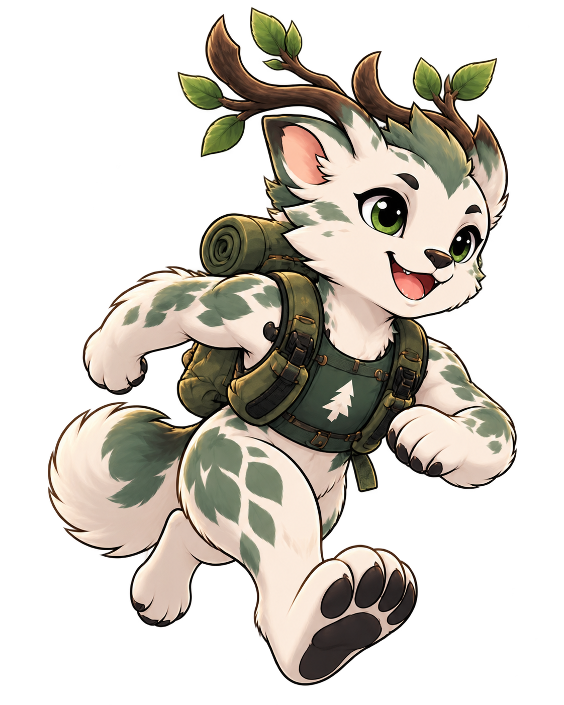

Массовый · 13+
3 км
Попробовать трейл и почувствовать его характер.
Регистрация будет подключена отдельноПопробовать WOOD
Три километра — возможность впервые почувствовать рельеф Самаровского чугаса без длинной дистанции.

Скачать GPXСтарт
Старт — 10:15. Старт на 3 км.
Место: природная территория «Долина ручьёв», г. Ханты-Мансийск, ул. Калинина, 1.
Расписание предварительное и может измениться.
Правила
Возраст: от 13 лет. Возраст определяется на день соревнований. По требованию организаторов участник должен подтвердить возраст документом.
Документы: Участникам с 7 лет нужна медицинская справка о допуске, выданная не ранее чем за 12 месяцев до 25 июля 2027 года. Участникам младше 18 лет также требуется согласие родителя или законного представителя. При отсутствии обязательных документов организатор вправе отказать в выдаче стартового пакета и допуске к старту.
Награждение: мужчины и женщины отдельно, 1–3 места в группах 13–14, 15–16 и 17–18 лет. Взрослые участники допускаются без отдельной возрастной наградной группы.
Скачать положение